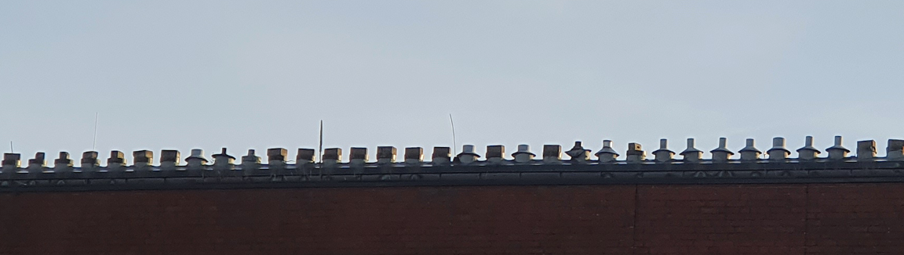

People
MPI, Plön © Julien Y. Dutheil.
Current
- Prof. Dr. Julien Y. Dutheil, Group Leader
- Jinyang Liang, PhD student
- Fernanda Giersdorf, PhD student
- Diyar Hamidi, Master student
- Muhammed Rašit Durak, PhD student
Former alumni
- Nataša Puzović, PhD student
- Kim Joffroy, Master student MAMBE, Kiel
- Maximilian Raas, Master student Radboud University, The Netherlands (2020 - 2021). Now Ph-D student at Utrecht University.
- Dr. Muhammad Bilal Haider, PhD student (2018 - 2021). Now postdoc with L. Henry at Queen Mary University of London.
- Dr. Gustavo Barroso, Intern and PhD student (2015 - 2019). Now postdoc with A. Ragsdale at UW-Madison.
- Dr. Ana Filipa Moutinho, PhD student (2017 - 2020). Now postdoc with A. Eyre-Walker at the University of Sussex.
- Marina Kiweler, Bachelor student University of Trier (2017)
- Shilpi Chaurasia, Postdoc (2014 - 2016). Now Senior Scientific Manager at Excelra.
- Estelle Renaud, Master student Ecole Normale Supérieure de Lyon, France(2016)
They spent some time with us...
- Basile Pajot (Internship 2023)
- Jorge Luis Cuamatzi (PhD student, lab visit 2022)
- Zeynep Akçor (Internship 2022)
- Alexander Jacobsen (PhD rotation, IMPRS 2021)
- Diyar Hamidi (Internship 2020)
- Nikhil Sharma (PhD rotation, IMPRS 2020)
- Abdulgawaad Saboukh (PhD rotation, IMPRS 2020)
- Tanvi Madaan (Internship 2020)
- Dr. Marni Traulsen (PhD rotation, Aarhus University 2019)
- Viplav Agarwal (Internship 2019)
- Şevval Aktürk (Internship 2019)
- Jorge Amaya Romero (PhD student, lab visit 2018)
- Dr. Sara Lado (Internship 2017)
- Pallavi Misra (Internship 2017)
- Dr. Manoj Gupka (PhD student, lab visit 2017)
- Dr. Duha Alioglu (Internship 2016)
- Dr. Alina Jeschke (PhD rotation, IMPRS 2015)
- Dr. Ahmad Samer Kadib Alban (PhD rotation, IMPRS 2015)